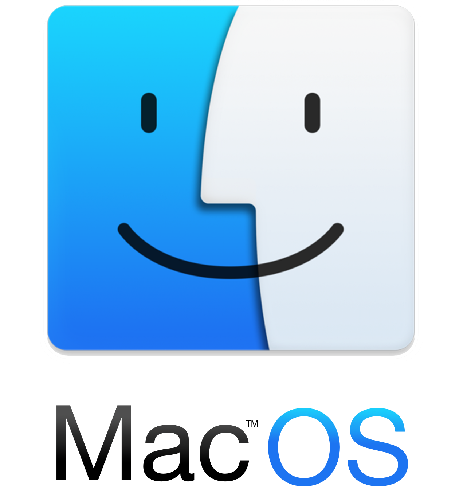
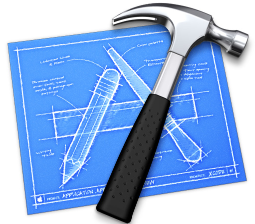
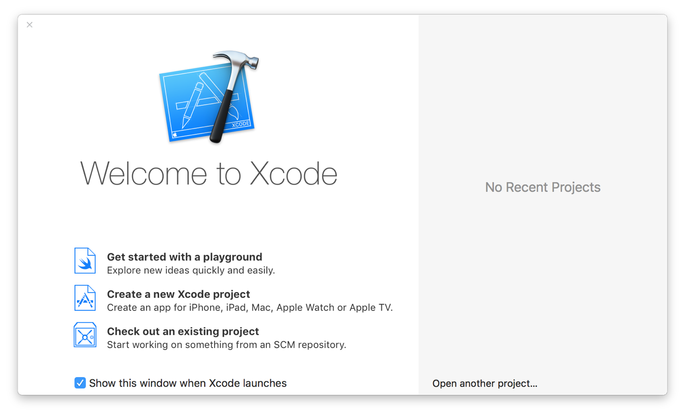
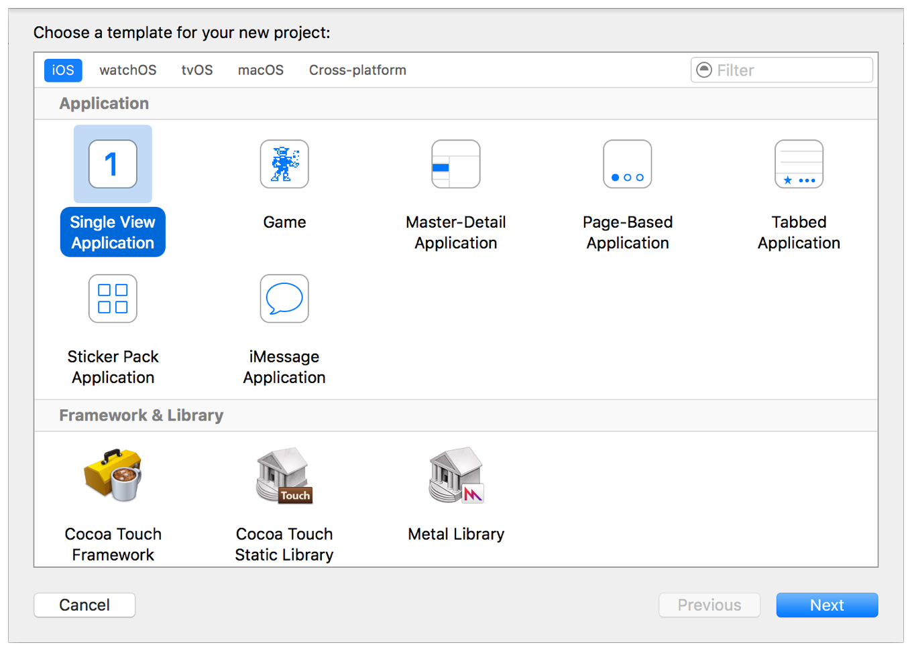
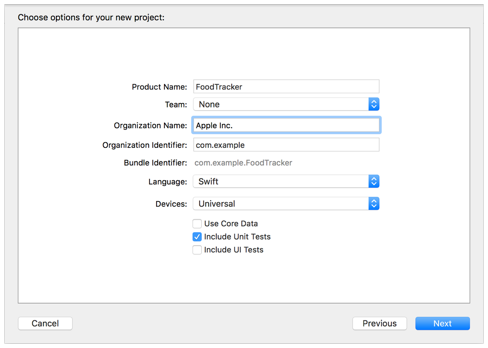
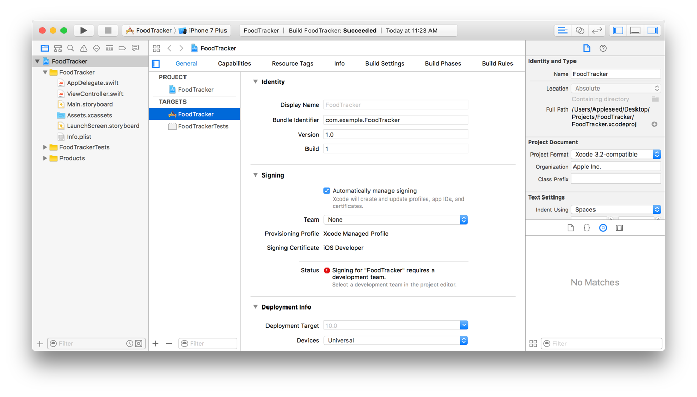

Make your apps Swifter!
Swift is the standard programming language introduced by Apple.inc since iOS7. It revolutionizes app development in ways suitable for a developer as well as beginner.
This tutorial shall guide you into making your very first app!
Prerequisites
The only prerequisite is a Macintosh with the latest version of XCode installed and a knack for learning ;)


About the Lessons
In these lessons, you'll be building a simple meal-tracking app called FoodTracker. This app shows a list of meals, including a meal name, rating, and photo. A user can add, remove, or edit a meal. To add a new meal or edit an existing one, users navigate to a different screen where they can specify a name, rating, and photo for a particular meal.

Build a Basic UI
This lesson gets you familiar with Xcode, the tool you use to write apps. You'll become familiar with the structure of a project in Xcode and learn how to navigate between and use basic project components. In the lesson, you'll start making a simple user interface (UI) for the FoodTracker app and view it in the simulator. When you're finished, your app will have a label for the meal’s name, a text field to change the meal's name, and a button for resetting the name.
Create a New Project
-
Open Xcode from the /Applications directory.
-
In the welcome window, click "Create a new Xcode project" (or choose File > New > Project).

-
Select iOS at the top of the dialog.
-
In the Application section, select Single View Application and then click Next.

-
In the dialog that appears, use the following values to name your app and choose additional options for your project:
-
Product Name: FoodTracker
-
Xcode uses the product name you entered to name your project and the app.
-
Team: If this is not automatically filled in, set the team to None.
-
Organization Name: The name of your organization or your own name. You can leave this blank.
-
Organization Identifier: Your organization identifier, if you have one. If you don’t, use com.example.
-
Bundle Identifier: This value is automatically generated based on your product name and organization identifier.
-
Language: Swift
-
Devices: Universal
A Universal app is one that runs on both iPhone and iPad.
-
Use Core Data: Unselected.
-
Include Unit Tests: Selected.
-
Include UI Tests: Unselected.

-
Click Next.
-
In the dialog that appears, select a location to save your project and click Create.
Xcode opens your new project in the workspace window.

-